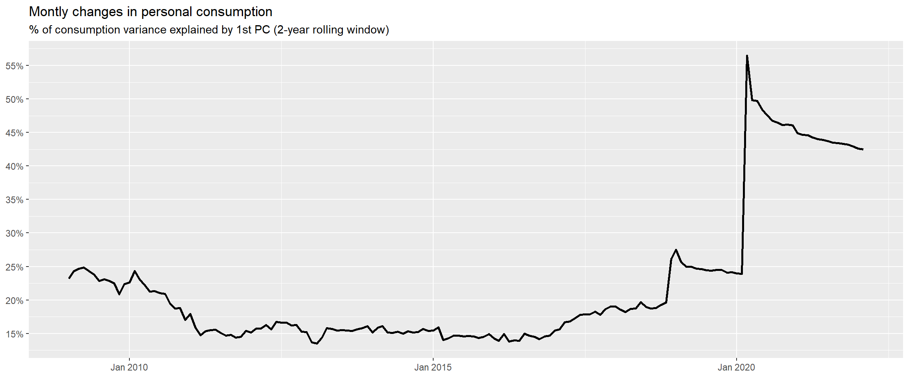
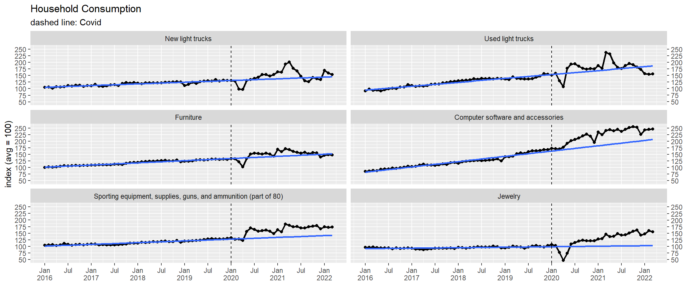
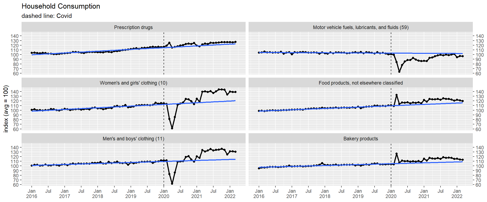
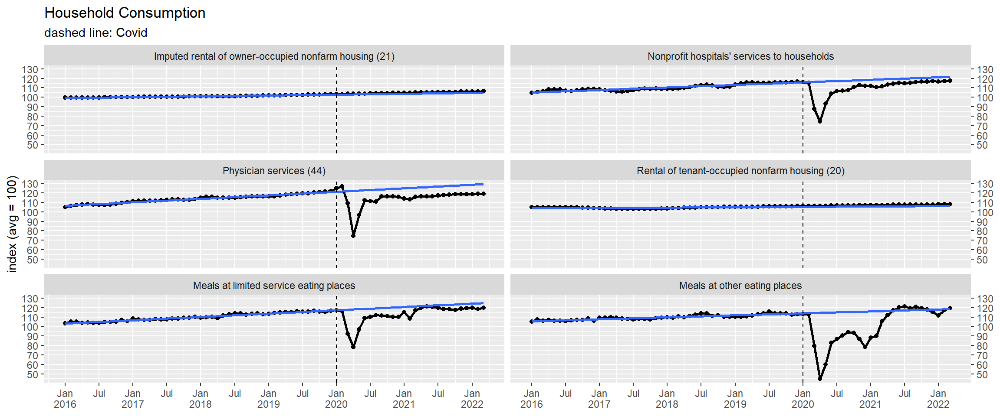

Last updated: 2022-05-09
Checks: 6 1
Knit directory: lpm/
This reproducible R Markdown analysis was created with workflowr (version 1.7.0). The Checks tab describes the reproducibility checks that were applied when the results were created. The Past versions tab lists the development history.
The R Markdown is untracked by Git. To know which version of the R
Markdown file created these results, you’ll want to first commit it to
the Git repo. If you’re still working on the analysis, you can ignore
this warning. When you’re finished, you can run
wflow_publish to commit the R Markdown file and build the
HTML.
Great job! The global environment was empty. Objects defined in the global environment can affect the analysis in your R Markdown file in unknown ways. For reproduciblity it’s best to always run the code in an empty environment.
The command set.seed(20220204) was run prior to running
the code in the R Markdown file. Setting a seed ensures that any results
that rely on randomness, e.g. subsampling or permutations, are
reproducible.
Great job! Recording the operating system, R version, and package versions is critical for reproducibility.
Nice! There were no cached chunks for this analysis, so you can be confident that you successfully produced the results during this run.
Great job! Using relative paths to the files within your workflowr project makes it easier to run your code on other machines.
Great! You are using Git for version control. Tracking code development and connecting the code version to the results is critical for reproducibility.
The results in this page were generated with repository version 1c63d44. See the Past versions tab to see a history of the changes made to the R Markdown and HTML files.
Note that you need to be careful to ensure that all relevant files for
the analysis have been committed to Git prior to generating the results
(you can use wflow_publish or
wflow_git_commit). workflowr only checks the R Markdown
file, but you know if there are other scripts or data files that it
depends on. Below is the status of the Git repository when the results
were generated:
Ignored files:
Ignored: .Rhistory
Ignored: .Rproj.user/
Untracked files:
Untracked: PROJECT_NOTES.md
Untracked: analysis/us-consumption.Rmd
Untracked: analysis/us-taylor-rule.Rmd
Untracked: data/us-taylor-rule/
Untracked: output/goods-elasticity/36225_tb1872c.pdf
Unstaged changes:
Modified: README.md
Deleted: Rplot.png
Modified: analysis/index.Rmd
Modified: data/sandp-earnings/SPCOMP-IDV.rds
Modified: data/sandp-earnings/TRUSI10-RY.rds
Modified: data/sandp-earnings/USGDPB-X.rds
Modified: data/sandp-earnings/USGOALLIB-X.rds
Modified: data/sandp-earnings/USSP500-A12FE.rds
Modified: data/sandp-earnings/USSP500-A12TE.rds
Modified: data/sandp-earnings/USSP500-APRICE.rds
Modified: data/sandp-earnings/USSP500-AS12FS.rds
Modified: data/sandp-earnings/USSP500-AS12TS.rds
Deleted: tmp.csv
Note that any generated files, e.g. HTML, png, CSS, etc., are not included in this status report because it is ok for generated content to have uncommitted changes.
There are no past versions. Publish this analysis with
wflow_publish() to start tracking its development.
O objetivo desta análise é verificar quais itens da cesta de consumo estão muito fora da tendência pré-covid.
A tabela abaixo mostra os principais ítens consumidos nos últimos 12 meses para duráveis:| LineDescription | value | share |
|---|---|---|
| New light trucks | $307,211 | 2.0 |
| Used light trucks | $197,420 | 1.3 |
| Furniture | $181,614 | 1.2 |
| Computer software and accessories | $135,129 | 0.9 |
| Sporting equipment, supplies, guns, and ammunition (part of 80) | $114,400 | 0.7 |
| Jewelry | $98,610 | 0.6 |
| Motor vehicle parts and accessories (58) | $97,610 | 0.6 |
| Personal computers/tablets and peripheral equipment | $74,771 | 0.5 |
| Major household appliances | $64,064 | 0.4 |
| Clocks, lamps, lighting fixtures, and other household decorative items | $58,305 | 0.4 |
| Used autos | $53,260 | 0.3 |
| Other recreational vehicles | $48,134 | 0.3 |
| Corrective eyeglasses and contact lenses | $44,365 | 0.3 |
| Televisions | $43,834 | 0.3 |
| New domestic autos | $43,272 | 0.3 |
| Luggage and similar personal items (part of 119) | $40,527 | 0.3 |
| Therapeutic medical equipment | $39,268 | 0.3 |
| Tools, hardware, and supplies | $37,710 | 0.2 |
| Audio equipment | $36,156 | 0.2 |
| Carpets and other floor coverings | $32,563 | 0.2 |
| LineDescription | value | share |
|---|---|---|
| Prescription drugs | $505,842 | 3.2 |
| Motor vehicle fuels, lubricants, and fluids (59) | $372,293 | 2.4 |
| Women’s and girls’ clothing (10) | $222,275 | 1.4 |
| Food products, not elsewhere classified | $194,120 | 1.2 |
| Men’s and boys’ clothing (11) | $128,639 | 0.8 |
| Bakery products | $112,736 | 0.7 |
| Tobacco (127) | $108,434 | 0.7 |
| Shoes and other footwear | $102,506 | 0.7 |
| Mineral waters, soft drinks, and vegetable juices | $100,245 | 0.6 |
| Games, toys, and hobbies | $92,649 | 0.6 |
| Nonprescription drugs | $91,146 | 0.6 |
| Hair, dental, shaving, and miscellaneous personal care products except electrical products | $91,001 | 0.6 |
| Pets and related products | $88,982 | 0.6 |
| Beer | $84,382 | 0.5 |
| Newspapers and periodicals | $76,585 | 0.5 |
| Poultry | $72,298 | 0.5 |
| Cereals | $67,053 | 0.4 |
| Cosmetic / perfumes / bath / nail preparations and implements | $64,350 | 0.4 |
| Processed dairy products | $61,119 | 0.4 |
| Beef and veal | $61,082 | 0.4 |
| LineDescription | value | share |
|---|---|---|
| Imputed rental of owner-occupied nonfarm housing (21) | $1,823,930 | 11.6 |
| Nonprofit hospitals’ services to households | $831,445 | 5.3 |
| Physician services (44) | $609,546 | 3.9 |
| Rental of tenant-occupied nonfarm housing (20) | $583,152 | 3.7 |
| Meals at limited service eating places | $422,239 | 2.7 |
| Meals at other eating places | $367,337 | 2.3 |
| Net health insurance (112) | $267,471 | 1.7 |
| Other professional medical services | $265,728 | 1.7 |
| Portfolio management and investment advice services | $259,978 | 1.7 |
| Government hospitals | $239,111 | 1.5 |
| Electricity (27) | $206,261 | 1.3 |
| Motor vehicle maintenance and repair (60) | $202,660 | 1.3 |
| Other depository institutions and regulated investment companies | $167,228 | 1.1 |
| Commercial banks | $165,330 | 1.1 |
| Proprietary hospitals | $144,678 | 0.9 |
| Cellular telephone services | $143,028 | 0.9 |
| Home health care | $138,028 | 0.9 |
| Alcohol in purchased meals | $130,392 | 0.8 |
| Dental services (45) | $130,321 | 0.8 |
| Proprietary and government nursing homes | $127,298 | 0.8 |
O gráfico abaixo mostra qual o percentual da variância do consumo mensal explicado pelo primeiro componente principal dos 194 itens de consumo. A dinâmica do consumo ainda está claramente ‘anormal’.

Abaixo o consumo real (quantidade) dos itens mais consumidos em cada uma das categorias: duráveis, não-duráveis e serviços.



R version 4.2.0 (2022-04-22 ucrt)
Platform: x86_64-w64-mingw32/x64 (64-bit)
Running under: Windows 10 x64 (build 19044)
Matrix products: default
locale:
[1] LC_COLLATE=English_United States.utf8
[2] LC_CTYPE=English_United States.utf8
[3] LC_MONETARY=English_United States.utf8
[4] LC_NUMERIC=C
[5] LC_TIME=English_United States.utf8
attached base packages:
[1] stats graphics grDevices utils datasets methods base
other attached packages:
[1] patchwork_1.1.1 forcats_0.5.1 stringr_1.4.0 dplyr_1.0.9
[5] purrr_0.3.4 readr_2.1.2 tidyr_1.2.0 tibble_3.1.7
[9] ggplot2_3.3.6 tidyverse_1.3.1 zoo_1.8-10 workflowr_1.7.0
loaded via a namespace (and not attached):
[1] nlme_3.1-157 fs_1.5.2 lubridate_1.8.0 webshot_0.5.3
[5] httr_1.4.3 rprojroot_2.0.3 tools_4.2.0 backports_1.4.1
[9] bslib_0.3.1 utf8_1.2.2 R6_2.5.1 mgcv_1.8-40
[13] DBI_1.1.2 colorspace_2.0-3 withr_2.5.0 tidyselect_1.1.2
[17] processx_3.5.3 compiler_4.2.0 git2r_0.30.1 cli_3.3.0
[21] rvest_1.0.2 xml2_1.3.3 labeling_0.4.2 sass_0.4.1
[25] scales_1.2.0 callr_3.7.0 rappdirs_0.3.3 systemfonts_1.0.4
[29] digest_0.6.29 rmarkdown_2.14 svglite_2.1.0 pkgconfig_2.0.3
[33] htmltools_0.5.2 parallelly_1.31.1 dbplyr_2.1.1 fastmap_1.1.0
[37] highr_0.9 rlang_1.0.2 readxl_1.4.0 rstudioapi_0.13
[41] farver_2.1.0 jquerylib_0.1.4 generics_0.1.2 jsonlite_1.8.0
[45] magrittr_2.0.3 kableExtra_1.3.4 Matrix_1.4-1 Rcpp_1.0.8.3
[49] munsell_0.5.0 fansi_1.0.3 lifecycle_1.0.1 furrr_0.3.0
[53] stringi_1.7.6 whisker_0.4 yaml_2.3.5 grid_4.2.0
[57] parallel_4.2.0 listenv_0.8.0 promises_1.2.0.1 slider_0.2.2
[61] crayon_1.5.1 lattice_0.20-45 splines_4.2.0 haven_2.5.0
[65] hms_1.1.1 knitr_1.39 ps_1.7.0 pillar_1.7.0
[69] codetools_0.2-18 reprex_2.0.1 glue_1.6.2 evaluate_0.15
[73] rsample_0.1.1 getPass_0.2-2 modelr_0.1.8 vctrs_0.4.1
[77] tzdb_0.3.0 httpuv_1.6.5 cellranger_1.1.0 gtable_0.3.0
[81] future_1.25.0 assertthat_0.2.1 xfun_0.30 pins_1.0.1
[85] broom_0.8.0 later_1.3.0 viridisLite_0.4.0 warp_0.2.0
[89] globals_0.14.0 ellipsis_0.3.2